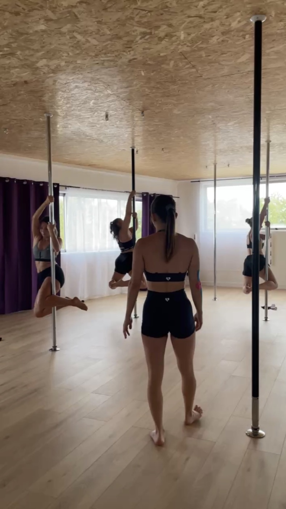

Tu as envie de faire de l'aérien, mais tu hésites entre la barre et le cerceau ? Les deux disciplines se pratiquent dans la même salle chez Yely in the Air, la Salle Air, à Chennevières-sur-Marne. Elles ne procurent pas du tout les mêmes sensations. Voici comment choisir celle qui te ressemble, ou pourquoi faire les deux.
Deux agrès, deux façons de voler
La pole dance se pratique autour d'une barre verticale, fixée du sol au plafond. Tu tournes autour, tu montes, tu t'assois dessus et tu redescends. On garde souvent un pied au sol au début, puis on monte de plus en plus haut. C'est un mélange de force, de fluidité, d'acrobatie et de danse.
Le cerceau aérien (on dit aussi hoop ou lyra) est un cercle en métal suspendu au plafond. Tu montes dedans, tu t'y assois, tu t'y suspends. Le cerceau bouge avec toi : tu travailles des figures posées, des transitions et des mouvements plus dynamiques. Au studio, il est réglable en hauteur, ce qui permet de débuter tout près du sol.
Ce que tu vas ressentir
| Pole dance | Cerceau aérien | |
|---|---|---|
| L'agrès | barre fixe, du sol au plafond | cercle suspendu, qui bouge avec toi |
| L'ambiance | danse, musicalité, chorégraphie | figures sculptées, côté poétique et circassien |
| Ce qui accroche | ta peau sur la barre | tes mains, l'arrière des genoux, les hanches |
| La tenue | short et brassière : jambes et bras découverts | leggings longs et haut à manches longues au début |
| Les petits bleus | intérieur des cuisses, genoux | creux des genoux, hanches |
| Les niveaux chez Yely | débutant, intermédiaire, avancé, chorégraphie, renforcement | débutant, intermédiaire |
La différence de tenue résume bien les deux pratiques. À la barre, c'est ta peau qui t'accroche : on se découvre. Dans le cerceau, on protège au contraire les zones qui frottent sur le métal.
Tu es plutôt pole dance si…
- tu as envie de danser : enchaîner des mouvements en musique, construire une petite chorégraphie ;
- tu aimes les tours et la sensation de vitesse autour de la barre ;
- tu veux une discipline où tu peux progresser longtemps, du débutant aux cours avancés et au workshop mensuel Pôle Expression ;
- tu veux garder un lien avec le sol, grâce aux transitions et au travail au sol.

Tu es plutôt cerceau aérien si…
- tu rêves de figures suspendues, comme des photos qu'on prend en plein vol ;
- tu aimes l'univers du cirque et les mouvements lents et contrôlés ;
- l'idée d'être bras et jambes nus te met mal à l'aise : ici on reste couverte ;
- tu aimes sentir l'agrès bouger et te balancer doucement.
Et pourquoi pas les deux ?
Tu n'es pas obligée de choisir : les deux disciplines se nourrissent l'une l'autre. La pole renforce le haut du corps et la prise de main, ce qui aide pour monter dans le cerceau. Le cerceau t'apprend à être à l'aise en suspension et à soigner tes lignes, ce qui se voit ensuite à la barre.
Pour aller plus loin dans les deux, deux cours complètent bien l'aérien au studio. Le Renforcement Pole travaille le gainage, les bras et les abdos. La Souplesse Aérien travaille les épaules, les hanches et les poignets, les zones qui travaillent le plus en aérien.
Notre conseil pour te décider
Le plus simple, c'est d'essayer. Le cours découverte coûte 18 €, en pole dance comme en cerceau aérien. Si tu hésites vraiment, réserve-en un de chaque : en deux séances, tu sauras lequel te fait le plus envie. Si tu prends ensuite une carte ou un abonnement dans les 7 jours, ces 18 € te sont déduits.
Tu te poses des questions sur ton tout premier cours (niveau, déroulé, quoi apporter) ? Tout est dans notre guide Débuter la pole dance dans le 94.
Infos pratiques
- Adresse : Salle Air, 19 rue Condorcet (2e étage), 94430 Chennevières-sur-Marne.
- Les professeures : cours de pole avec Ana, Coline, Mélissa et Cassandra ; cours de cerceau avec Ana, Coline et Cynthia.
- Tu viens d'à côté ? De Champigny, Saint-Maur, Ormesson, Sucy-en-Brie ou Créteil, le studio est à quelques minutes.
- Ton premier cours : le cours découverte coûte 18 €, déduit si tu t'inscris dans les 7 jours.
Barre, cerceau, ou les deux ?
Réserver mon cours découverte — 18 €